화공기사(구) (2020-06-06 기출문제)
1과목: 화공열역학
1. 이상기체가 가역공정을 거칠 때, 내부에너지의 변화와 엔탈피의 변화가 항상 같은 공정은?
- 정적공정
- 등온공정
- 등압공정
- 단열공정
(정답률: 61%)

2. Joule-Thomson coefficient(μ)에 관한 설명 중 틀린 것은?
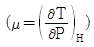
로 정의된다.- 일정 엔탈피에서 발생되는 변화에 대한 값이다.
- 이상기체의 점도에 비례한다.
- 실제 기체에서도 그 값은 0 이 될수 있다.
(정답률: 50%)
3. 화학포텐셜(Chemical potential)과 같은 것은?
- 부분 몰 Gibbs 에너지
- 부분 몰 엔탈피
- 부분 몰 엔트로피
- 부분 몰 용적
(정답률: 75%)
4. 32℃의 방에서 운전되는 냉장고를 -12℃로 유지한다. 냉장고로부터 2300cal의 열량을 얻기 위하여 필요한 최소 일량(J)은?
- 1272
- 1443
- 1547
- 1621
(정답률: 35%)
5. 열역학 제1법칙에 대한 설명과 가장 거리가 먼 것은?
- 받은 열량을 모두 일로 전환하는 기관을 제작하는 것은 불가능하다.
- 에너지의 형태는 변할 수 있으나 총량은 불변한다.
- 열량은 상태량이 아니지만 내부에너지는 상태량이다.
- 계가 외부에서 흡수한 열량 중 일을 하고 난 나머지는 내부 에너지를 증가시킨다.
(정답률: 56%)
6. 물이 얼음 및 수증기와 평형을 이루고 있을 때, 이 계의 자유도는?
- 0
- 1
- 2
- 3
(정답률: 73%)
7. 내부에너지의 관계식이 다음과 같을 때 괄호 안에 들어갈 식으로 옳은 것은? (단, 닫힌계이며, U:내부에너지, S:엔트로피, T:절대온도이다.)
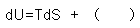
- PdV
- -PdV
- VdP
- -VdP
(정답률: 72%)
8. 단열계에서 비가역 팽창이 일어난 경우의 설명으로 가장 옳은 것은?
- 엔탈피가 증가되었다.
- 온도가 내려갔다.
- 일이 행해졌다.
- 엔트로피가 증가되었다.
(정답률: 56%)
9. 1m3의 공기를 20atm로부터 100atm로 등엔트로피 공정으로 압축했을 때, 최종 상태의 용적(m3)은? (단, Cp/Cv=1.40이며, 공기는 이상기체라 가정한다.)
- 0.40
- 0.32
- 0.20
- 0.16
(정답률: 62%)
10. 열역학적 지표에 대한 설명 중 틀린 것은?
- 이상기체의 엔탈피는 온도만의 함수이다.
- 일은 항상 ∫PdV 으로 계산된다.
- 고립계의 에너지는 일정해야만 한다.
- 계의 상태가 가역 단열적으로 진행될 때 계의 엔트로피는 변하지 않는다.
(정답률: 62%)
11. 다음 계에서 열효율(η)의 표현으로 옳은 것은? (단, QH:외계로부터 전달받은 열, QC:계로부터 전달된 열, W:순 일)
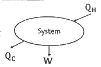
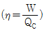
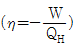
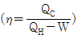
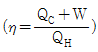
(정답률: 67%)
12. 반데르발스(van der Waals) 식에 적용되는 실제기체에 대하여
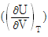
의 값을 옳게 표현한 것은?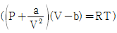
- a/P
- a/T
- a/V2
- a/PT
(정답률: 73%)
13. 이상기체에 대하여 일(W)이 다음과 같은 식으로 표현될 때, 이 계의 변화과정은? (단, Q는 열, V1은 초기부피, V2는 최종부피이다.)
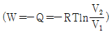
- 단열과정
- 등압과정
- 등온과정
- 정용과정
(정답률: 69%)
14. 다음 사이클(cycle)이 나타내는 내연기관은?
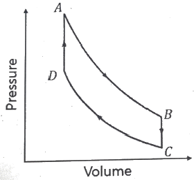
- 공기표준 오토엔진
- 공기표준 디젤엔진
- 가스터빈
- 제트엔진
(정답률: 72%)
15. 다음은 평형조건들 중 T'=T'', P'=P'' 조건을 제외한 평형 관계식 중 실제물질의 거동과 가장 관련이 없는 것은? (단, X, Y는 액체, 기체의 몰분률이며,
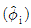
는 I성분의 퓨개시티 계수,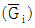
는 몰당 Gibbs 자유에너지이다.)- 기액평형 :
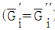
- 기액평형 :
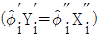
- 기액평형 :
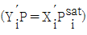
- 액액평형 :
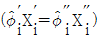
(정답률: 34%)
16. 다음의 관계식을 이용하여 기체의 정압 열용량(CP)과 정적 열용량(CV) 사이의 일반식을 유도하였을 때 옳은 것은?
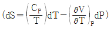
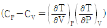
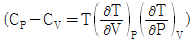
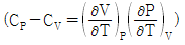
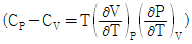
(정답률: 48%)
17. CP에 대한 압력의존성을 설명하기 위해 정압하에서 온도에 대해 미분해야 하는 식으로 옳은 것은? (단, CP: 정압열용량, μ: Joule-Thomson coefficient이다.)
- -μCP
- CP/μ
- CP-μ
- CP+μ
(정답률: 50%)
18. 정압공정에서 80℃의 물 2kg과 10℃의 물 3kg을 단열된 용기에서 혼합하였을 때 발생한 총 엔트로피 변화(kJ/K)는? (단, 물의 열용량은 CP=4.184kJ/kg·K로 일정하다고 가정한다.)
- 0.134
- 0.124
- 0.114
- 0.104
(정답률: 41%)
19. 40℃, 20atm에서 혼합가스의 성분이 아래의 표와 같을 때, 각 성분의 퓨개시티 계수(ø)는?
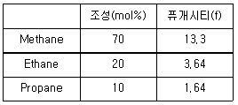
- Methane: 0.95, Ethane:0.93, Propane:0.91
- Methane: 0.93, Ethane:0.91, Propane:0.82
- Methane: 0.95, Ethane:0.91, Propane:0.82
- Methane: 0.98, Ethane:0.93, Propane:0.82
(정답률: 58%)
20. 일산화탄소 가스의 산화반응의 반응열이 -68000cal/mol 일 때, 500℃에서 평형상수는 e28이였다. 동일한 반응이 350℃에서 진행됐을 때의 평형상수는? (단, 위의 온도범위에서 반응열은 일정하다.)
- e38.7
- e48.7
- e98.7
- e120
(정답률: 57%)
2과목: 단위조작 및 화학공업양론
21. 임계상태에 대한 설명으로 옳은 것은?
- 임계온도 이하의 기체는 압력을 아무리 높여도 액체로 변화시킬 수 없다.
- 임계압력 이하의 기체는 온도를 아무리 낮추어도 액체로 변화시킬 수 없다.
- 임계점에서 체적에 대한 압력의 미분값이 존재하지 않는다.
- 증발잠열이 0 이 되는 상태이다.
(정답률: 43%)
22. 18℃에서 액체 A의 엔탈피를 0 이라 가정하고, 150℃에서 증기 A의 엔탈피(cal/g)는? (단, 액체 A의 비열 : 0.44cal/g·℃, 증기 A의 비열 : 0.32cal/g·℃, 100℃의 증발열: 86.5cal/g 이다.)
- 70
- 139
- 200
- 280
(정답률: 63%)
23. 가역적인 일정압력의 닫힌계에서 전달되는 열의 양과 같은 값은?
- 깁스자유에너지 변화
- 엔트로피 변화
- 내부에너지 변화
- 엔탈피 변화
(정답률: 47%)
24. SI 기본단위가 아닌 것은?
- A(ampere)
- J(joule)
- cm(centimeter)
- kg(kilogram)
(정답률: 54%)
25. 수소와 질소의 혼합물의 전압이 500atm 이고, 질소의 분압이 250atm 이라면 이 혼합기체의 평균 분자량은?
- 3.0
- 8.5
- 9.4
- 15.0
(정답률: 59%)
26. 라울의 법칙에 대한 설명 중 틀린 것은?
- 벤젠과 톨루엔의 혼합액과 같은 이상용액에서 기-액 평형의 정도를 추산하는 법칙이다.
- 용질의 용해도가 높아 액상에서 한성분의 몰분율이 거의 1에 접근할 때 잘 맞는 법칙이다.
- 기-액 평형시 기상에서 한성분의 압력(PA)은 동일 온도에서의 순수한 액체성분의 증기압(PA*)과 액상에서 한 액체성분의 몰분율(XA)의 식으로 나타나는 법칙이다.
- 순수한 액체성분의 증기압(PA*)은 대체적으로 물질특성에 따른 압력만의 함수이다.
(정답률: 37%)
27. A와 B 혼합물의 구성비가 각각 30wt%, 70wt% 일 때, 혼합물에서의 A의 몰분율은? (단, 분자량 A:60g/mol, B:140g/mol 이다.)
- 0.3
- 0.4
- 0.5
- 0.6
(정답률: 61%)
28. F1, F2가 다음과 같을 때, F1+F2의 값으로 옳은 것은?
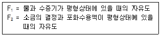
- 2
- 3
- 4
- 5
(정답률: 58%)
29. 메탄가스를 20vol% 과잉산소를 사용하여 연소시킨다. 초기 공급된 메탄가스의 50%가 연소될 때, 연소 후 이산화탄소의 습량 기준(wet basis) 함량(vol%)은?
- 14.7
- 16.3
- 23.2
- 30.2
(정답률: 33%)
30. 양대수좌표(log-log graph)에서 직선이 되는 식은?
- Y=bxa
- Y=beax
- Y=bx+a
- logY=logb+ax
(정답률: 46%)
31. 40%의 수분을 포함하고 있는 고체 1000kg을 10%의 수분을 가질 때까지 건조할 때 제거된 수분량(kg)은?
- 333
- 450
- 550
- 667
(정답률: 59%)
32. 불포화상태 공기의 상대습도(relatove humidity)를 Hr, 비교습도(percentage humidity)를 Hp로 표시할 때 그 관계를 옳게 나타낸 것은? (단, 습도가 0% 또는 100%인 경우는 제외한다.)
- Hp=Hr
- Hp＞Hr
- Hp＜Hr
- Hp+Hr=0
(정답률: 46%)
33. 상접점(plait point)의 설명으로 틀린 것은?
- 균일상에서 불균일상으로 되는 경계점
- 액액 평형선 즉, tie-line 의 길이가 0 인 점
- 용해도 곡선(binodal curve) 내부에 존재하는 한 점
- 추출상과 추출 잔류상의 조성이 같아지는 점
(정답률: 45%)
34. 2성분 혼합물의 증류에서 휘발성이 큰 A성분에 대한 정류부의 조작선이
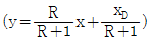
로 표현될 때, 최소환류비에 대한 설명으로 옳은 것은? (단, y는 n+1단을 떠나는 증기 중 A 성분의 몰분율, x는 n단을 떠나는 액체 중 A 성분의 몰분율, R은 탑정제품에 대한 환류의 몰비, xp는 탑정제품 중 A 성분의 몰분율이다.- R은 ∞이다.
- R은 0 이다.
- 단수는 ∞이다.
- 최소단수를 갖는다.
(정답률: 42%)
35. 경사 마노미터를 사용하여 측정한 두 파이프 내 기체의 압력차는?
- 경사각의 sin값에 반비례한다.
- 경사각의 sin값에 비례한다.
- 경사각의 cos값에 반비례한다.
- 경사각의 cos값에 비례한다.
(정답률: 56%)
36. 메탄올 40mol%, 물 60mol%의 혼합액을 정류하여 메탄올 95mol%의 유출액과 5mol%의 관출액으로 분리한다. 유출액 100kmol/h을 얻기 위한 공급액의 양(kmol/h)은?
- 257
- 226
- 190
- 175
(정답률: 54%)
37. 기본 단위에서 길이를 L, 질량을 M, 시간을 T로 표시할 때 차원의 표현이 틀린 것은?
- 힘: MLT-2
- 압력: ML-2T-2
- 점도: ML-1T-1
- 일: ML2T-2
(정답률: 61%)
38. 단면이 가로 5cm, 세로 20cm인 직사각형 관로의 상당직경(cm)은?
- 16
- 12
- 8
- 4
(정답률: 55%)
39. 기계적 분리조작과 가장 거리가 먼 것은?
- 여과
- 침강
- 집진
- 분쇄
(정답률: 50%)
40. 열전달은 3가지의 기본인 전도, 대류, 복사로 구성된다. 다음 중 열전달 메커니즘이 다른 하나는?
- 자동차의 라디에이터가 팬에 의해 공기를 순환시켜 열을 손실하는 것
- 용기에서 음식을 조리할 때 짓는 것
- 뜨거운 커피잔의 표면에 바람을 불어 식히는 것
- 전자레인지에 의해 찬 음식물을 데우는 것
(정답률: 53%)
3과목: 공정제어
41. 다음 공정에 PI 제어기 (KC=0.5, τI=3)가 연결되어 있는 닫힌루프 제어공정에서 특성방정식은? (단, 나머지 요소의 전달함수는 1이다.)
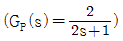
- 2s+1=0
- 2s2+s=0
- 6s2+6s+1=0
- 6s2+3s+2=0
(정답률: 48%)
42. 다음과 같은 f(t)에 대응하는 라플라스 함수는?
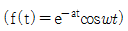
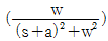
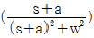
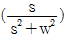
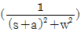
(정답률: 57%)
43. 단면적이 3ft2인 액체저장 탱크에서 유출유량은
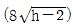
로 주어진다. 정상상태 액위(hs)가 9ft2일 때, 이 계의 시간상수(τ:분)는?(오류 신고가 접수된 문제입니다. 반드시 정답과 해설을 확인하시기 바랍니다.)- 5
- 4
- 3
- 2
(정답률: 20%)
44. Q(H)=C√H로 나타나는 식을 정상상태(Hs)근처에서 선형화했을 때 옳은 것은? (단, C는 비례정수이다.)
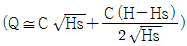
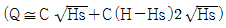
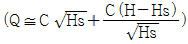
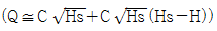
(정답률: 49%)
45. 개루프 전달함수가
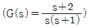
일 때, 다음과 같은 negative 되먹임의 폐루프 전달함수(C/R)은?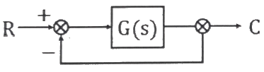
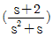
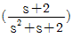
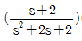
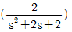
(정답률: 54%)
46. 순수한 적분공정에 대한 설명으로 옳은 것은?
- 진폭비(Amplitude ratio)는 주파수에 비례한다.
- 입력으로 단위임펄스가 들어오면 출력은 계단형 신호가 된다.
- 작은 구멍이 뚫린 저장탱크의 높이와 입력흐름의 관계는 적분공정이다.
- 이송지연(transportation lag) 공정이라고 부르기도 한다.
(정답률: 45%)
47.
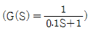
인 계에 X(t)=2sin(20t)인 입력을 가하였을 때 출력의 진폭(amplitude)은?- 2/5
- √2/5
- 5/2
- 2/√5
(정답률: 36%)
48. 제어기 설계를 위한 공정모델과 관련된 설명으로 틀린 것은?
- PID 제어기를 Ziegler-Nichols 방법으로 조율하기 위해서는 먼저 공정의 전달함수를 구하는 과정이 필수로 요구된다.
- 제어기 설계에 필요한 모델은 수지식으로 표현되는 물리적 원리를 이용하여 수립될 수 있다.
- 제어기 설계에 필요한 모델은 공정의 입출력 신호만을 분석하여 경험적 형태로 수립될 수 있다.
- 제어기 설계에 필요한 모델은 물리적 모델과 경험적 모델을 혼합한 형태로 수립될 수 있다.
(정답률: 39%)
49. 증류탑의 응축기와 재비기에 수은기둥 온도계를 설치하고 운전하면서 한 시간마다 온도를 읽어 다음 그림과 같은 데이터를 얻었다. 이 데이터와 수은기둥 온도 값 각각의 성질로 옳은 것은?
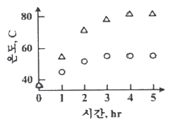
- 연속(continuous), 아날로그
- 연속(continuous), 디지털
- 이산시간(discrete-time), 아날로그
- 이산시간(discrete-time), 디지털
(정답률: 56%)
50. 조작변수와 제어변수와의 전달함수가
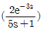
, 외란과 제어변수와의 전달함수가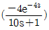
로 표현되는 공정에 대하여 가장 완벽한 외란보상을 위한 피드포워드 제어기 형태는?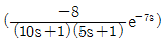
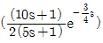
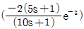
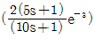
(정답률: 21%)
51. 안정도 판정을 위한 개회로 전달함수가 인 피드백 제어계가 안정할 수 있는 K와 τ의 관계로 옳은 것은?
- 12K ＜ (5+2τK)
- 12K ＜ (5+10τK)
- 12K ＞ (5+10τK)
- 12K ＞ (5+2τK)
(정답률: 44%)
52. PI 제어기가 반응기 온도제어루프에 사용되고 있다. 다음의 변화에 대하여 계의 안정성 한계에 영향을 주지 않는 것은?
- 온도전송기의 span 변화
- 온도전송기의 영점 변화
- 밸브의 trim 변화
- 반응기 원료 조성 변화
(정답률: 34%)
53. 다음 그림과 같은 시스템의 안정도에 대해 옳은 것은?
- -1＜k＜0 이면, 이 공정은 안정하다.
- k＞3 이면, 이 공정은 안정하다.
- 0＜k＜1 이면, 이 공정은 안정하다.
- k＞1 이면, 이 공정은 안정하다.
(정답률: 31%)
54. Closed-loop 전달함수의 특성방정식이 10s3+17s2+8s+1+Kc=0 일 때 이 시스템이 안정할 Kc의 범위는?
- Kc＞1
- -1＜ Kc＜12.6
- 1＜ Kc＜12.6
- Kc＞12.6
(정답률: 49%)
55. 그림과 같이 표시되는 함수의 Laplace 변환으로 옳은 것은?
- e-csL[f]
- ecsL[f]
- L[f(s-c)]
- L[s(s+c)]
(정답률: 41%)
56. offset은 없어지지 않으나 최종치(final value)에 도달하는 시간이 가장 많이 단축되는 제어기(controller)은?
- PI controller
- P controller
- D controller
- PID controller
(정답률: 34%)
57. 다음 비선형공정을 정상상태의 데이터 ys, us에 대해 선형화한 것은?
(정답률: 25%)
58. 열전대(Thermocouple)와 관계있는 효과는?
- Thomson-Peltier 효과
- Piezo-electric 효과
- Joule-Thomson 효과
- Van der waals 효과
(정답률: 46%)
59. 전달함수가 인 시스템에 대한 계단응답의 특징은?
- 2차 과소 감쇠(underdamped)
- 2차 과도 감쇠(overdamped)
- 2차 임계 감쇠(critically damped)
- 1차 비진동
(정답률: 43%)
60. PID 제어기의 적분제어 동작에 관한 설명 중 잘못된 것은?
- 일정한 값의 설정치와 외란에 대한 잔류오차(offset)를 제거해 준다.
- 적분시간(integral time)을 길게 주면 적분동작이 약해진다.
- 일반적으로 강한 적분동작이 약한 적분동작보다 폐루프(closed loop)의 안정성을 향상시킨다.
- 공정변수에 혼입되는 잡음의 영향을 필터링하여 약화시키는 효과가 있다.
(정답률: 35%)
4과목: 공업화학
61. 질산과 황산의 혼산에 글리세린을 반응시켜 만드는 물질로 비중이 약 1.6이고 다이너마이트를 제조할 때 사용되는 것은?
- 글리세릴 디니트레이트
- 글리세릴 모노니트레이트
- 트리니트로톨루엔
- 니트로글리세린
(정답률: 57%)
62. 석유의 증류공정 중 원유에 다량의 황화합물이 포함되어 있을 경우 발생되는 문제점이 아닌 것은?
- 장치 부식
- 공해 유발
- 촉매 환원
- 악취 발생
(정답률: 61%)
63. 95.6% 황산 100g을 40% 발연황산을 이용하여 100% 황산을 만들려고 한다. 이론적으로 필요한 발연황산의 무게(g)는?
- 42.4
- 48.9
- 53.6
- 60.2
(정답률: 36%)
64. 격막법 전해조에서 양극과 음극 용액을 다공성의 격막으로 분리하는 주된 이유로 옳은 것은?
- 설치 비용을 절감하기 위해
- 전류 저항을 높이기 위해
- 부반응을 작게 하기 위해
- 전해 속도를 증가시키기 위해
(정답률: 54%)
65. 25wt% HCl 가스를 물에 흡수시켜 35wt% HCl 용액 1ton을 제조하고자 한다. 이 때 배출가스 중 미반응 HCl 가스가 0.012wt% 포함된다면 실제 사용된 25wt% HCl 가스의 양(ton)은?
- 0.35
- 1.40
- 3.51
- 7.55
(정답률: 46%)
66. 고체 MgCO3가 부분적으로 분해되어진 계의 자유도는?
- 1
- 2
- 3
- 4
(정답률: 43%)
67. 다음 염의 수용액을 전기분해할 때 음극에서 금속을 얻을 수 있는 것은?
- KOH
- K2SO4
- NaCl
- CuSO4
(정답률: 47%)
68. 에스테르화(esterification) 반응을 할 수 있는 반응물로 옳게 짝지어진 것은?
- CH3COOC2H5, CH3OH
- C2H2, CH3COOH
- CH3COOH, C2H5OH
- C2H5OH, CH3CONH2
(정답률: 53%)
69. 니트릴 이온(NO2+)을 생성하는 중요 인자로 밝혀진 것과 가장 거리가 먼 것은?
- C2H5ONO2
- N2O4
- HNO3
- N2O5
(정답률: 30%)
70. 접촉식 황산제조와 관계가 먼 것은?
- 백금 촉매 사용
- V2O5 촉매 사용
- SO3 가스를 황산에 흡수시킴
- SO3 가스를 물에 흡수시킴
(정답률: 45%)
71. 아닐린을 Na2Cr2O7을 산화제로 황산용액 중에서 저온(5℃)에서 산화시켜 얻을 수 있는 생성물은?
- 벤조퀴논
- 아조벤젠
- 니트로벤젠
- 니트로페놀
(정답률: 50%)
72. 고분자 합성에 의하여 생성되는 범용 수지 중 부가 반응에 의하여 얻는 수지가 아닌 것은?
(정답률: 42%)
73. 융점이 327℃이며, 이 온도 이하에서는 용매가공이 불가능할 정도로 매우 우수한 내약품성이 지니고 있어 화학공정기계의 부식방지용 내식재료로 많이 응용되고 있는 고분자 재료는?
- 폴리테트라 플로로에틸렌
- 폴리카보네이트
- 폴리이미드
- 폴리에틸렌
(정답률: 42%)
74. 수성가스로부터 인조석유를 만드는 합성법으로 옳은 것은?
- Williamson 법
- Kolbe-Schmitt법
- Fischer-Tropsch법
- Hoffman법
(정답률: 53%)
75. 진성 반도체(intrinsic semiconductor)에 대한 설명 중 틀린 것은?
- 전자와 hole쌍에 의해서만 전도가 일어난다.
- Fermi 준위가 band gap내의 valence band 부근에 형성된다.
- 결정 내에 불순물이나 결함이 거의 없는 화학양론적 도체를 이룬다.
- 낮은 온도에서는 부도체와 같지만 높은 온도에서는 도체와 같이 거동한다.
(정답률: 34%)
76. 염화수소 가스의 합성에 있어서 폭발이 일어나지 않도록 주의하여야 할 사항이 아닌 것은?
- 공기와 같은 불활성 가스로 염소가스를 묽게 한다.
- 석영괘, 자기괘 등 반응완화 촉매를 사용한다.
- 생성된 염화수소 가스를 냉각 시킨다.
- 수소가스를 과잉으로 사용하여 염소가스를 미반응 상태가 안되도록 한다.
(정답률: 42%)
77. 다음 중 고옥탄가의 가솔린을 제조하기 위한 공정은?(오류 신고가 접수된 문제입니다. 반드시 정답과 해설을 확인하시기 바랍니다.)
- 접촉개질
- 알킬화 반응
- 수증기분해
- 중합반응
(정답률: 24%)
78. 솔베이법에서 암모니아는 증류탑에서 회수된다. 이 때 쓰이는 조작 중 옳은 것은?
- Ca(OH)2를 가한다.
- Ba(OH)2를 가한다.
- 가열 조작만 한다.
- NaCl을 가한다.
(정답률: 53%)
79. 가성소다(NaOH)를 만드는 방법 중 격막법과 수은법을 비교한 것으로 옳은 것은?
- 격막법에서는 막이 파손될 때에 폭발이 일어날 위험이 없다.
- 제품의 가성소다 품질은 격막법보다 수은법이 좋다.
- 수은법에서는 고동도를 만들기 위해서 많은 증기가 필요하기 때문에 보일러용 연료가 많이 필요하다.
- 전류 밀도에 있어서 격막법은 수은법의 5∼6배가 된다.
(정답률: 54%)
80. 아래와 같은 장/단점을 갖는 중합반응공정으로 옳은 것은?
- 괴상중합
- 용액중합
- 현탁중합
- 유화중합
(정답률: 38%)
5과목: 반응공학
81. 압력이 일정하게 유지되는 회분식 반응기에서 초기에 A물질 80%를 포함하는 반응혼합물의 체적이 3분 동안에 20% 감소한다고 한다. 이 기상반응이 2A→R 형태의 1차 반응으로 될 때 A 물질의 소멸에 대한 속도상수(min-1)는?
- -0.135
- 0.135
- 0.323
- 0.231
(정답률: 20%)
82. 인 액상반응에 대한 25℃에서의 평형상수(K298)는 300이고 반응열( △Hr)은 -18000cal/mol 일 때, 75℃에서 평형 전환율은?
- 55%
- 69%
- 79%
- 93%
(정답률: 35%)
83. 화학반응에서 lnk와 1/T 사이의 관계를 옳게 나타낸 그래프는?（단, k:반응속도 상수, T:온도를 나타내며, 활성화 에너지는 양수이다.)
(정답률: 59%)
84. 반응물 A가 단일 혼합흐름반응기에서 1차 반응으로 80%의 전환율을 얻고 있다. 기존의 반응기와 동일한 크기의 반응기를 직렬로 하나 더 연결하고자 한다. 현재의 처리속도와 동일하게 유지할 때 추가되는 반응기로 인해 변화되는 반응물의 전환율은?
- 0.90
- 0.93
- 0.96
- 0.99
(정답률: 44%)
85. A→2R인 기체상 반응은 기초반응(elementary reaction)이다. 이 반응이 순수한 A로 채워진 부피가 일정한 회분식 반응기에서 일어날 때 10분 반응 후 전환율이 80%이었다. 이 반응을 순수한 A를 사용하며 공간시간이 10분인 혼합흐름 반응기에서 일으킬 경우 A의 전환율은?
- 91.5%
- 80.5%
- 65.5%
- 51.5%
(정답률: 19%)
86. CAO=1, CRO=CSO=0, A→R↔S, k1=k2=k-2일 때, 시간이 충분히 지나 반응이 평형에 이르렀을 때 농도의 관계로 옳은 것은?
- CA=CR
- CA=CS
- CR=CS
- CA≠CR≠CS
(정답률: 55%)
87. 어떤 반응의 반응속도와 전환율의 상관관계가 아래의 그래프와 같다. 이 반응을 상업화 한다고 할 때 더 경제적인 반응기는? (단, 반응기의 유지보수 비용은 같으며, 설치비를 포함한 가격은 반응기 부피에만 의존한다고 가정한다.)
- 플러그흐름반응기
- 혼합흐름반응기
- 어느 것이나 상관없음
- 플러그흐름반응기와 혼합흐름반응기를 연속으로 연결
(정답률: 43%)
88. 정용 회분식 반응기에서 비가역 0차 반응이 완결되는데 필요한 반응 시간에 대한 설명으로 옳은 것은?
- 초기 농도의 역수와 같다.
- 반응속도 정수의 역수와 같다.
- 초기 농도를 반응속도 정수로 나눈 값과 같다.
- 초기 농도에 반응속도 정수를 곱한 값과 같다.
(정답률: 56%)
89. 어떤 반응의 속도상수가 25℃일 때 3.46×10-5s 이고 65℃ 일 때 4.87×10-3s-1이다. 이 반응의 활성화 에너지(kcal/mol)는?
- 10.75
- 24.75
- 213
- 399
(정답률: 53%)
90. 공간시간(space time)에 대한 설명으로 옳은 것은?
- 한 반응기 부피만큼의 반응물을 처리하느데 필요한 시간을 말한다.
- 반응물이 단위부피의 반응기를 통과하는데 필요한 시간을 말한다.
- 단위 시간에 처리할 수 있는 원료의 몰수를 말한다.
- 단위사간에 처리할 수 있는 원료의 반응기 부피의 배수를 말한다.
(정답률: 52%)
91. 어떤 단일성분 물질의 분해반응은 1차 반응이며 정용 회분식 반응기에서 99%까지 분해하는데 6646초가 소요되었을 때, 30%까지 분해하는데 소요되는 시간(s)는?
- 515
- 540
- 720
- 813
(정답률: 53%)
92. 화학반응속도의 정의 또는 각 관계식의 표현 중 틀린 것은?
- 단위시간과 유체의 단위체적(V)당 생성된 물질의 몰수(ri)
- 단위시간과 고체의 단위질량(W)당 생성된 물질의 몰수(ri)
- 단위시간과 고체의 단위표면적(S)당 생성된 물질의 몰수(ri)
- ri/V=ri/W=ri/S
(정답률: 42%)
93. 회분반응기(batch reactor)의 일반적인 특성에 대한 설명으로 가장 거리가 먼 것은?
- 일반적으로 소량 생산에 적합하다.
- 단위 생산량당 인건비와 취급비가 적게 드는 장점이 있다.
- 연속조작이 용이하지 않은 공정에 사용된다.
- 하나의 장치에서 여러 종류의 제품을 생산하는데 적합하다.
(정답률: 47%)
94. 반응차수가 1차인 반응의 반응물 A를 공간시간(space time)이 같은 보기의 반응기에서 반응을 진행시킬 때, 반응기 부피 관점에서 가장 유리한 반응기는?
- 혼합흐름반응기
- 플러그흐름반응기
- 플러그흐름반응기와 혼합흐름반응기의 직렬 연결
- 전환율에 따라 다르다.
(정답률: 40%)
95. 적당한 조건에서 A는 다음과 같이 분해되고 원료 A의 유입속도가 100L/h일 때 R의 농도를 최대로 하는 플러그 흐름 반응기의 부피(L)는? (단, k1=0.2/min, k2=0.2/min, CAO=1mol/L, CRO=CSO=0 이다.)
- 5.33
- 6.33
- 7.33
- 8.33
(정답률: 23%)
96. 액상 반응물 A가 다음과 같이 반응할 때 원하는 물질 R의 순간수율 을 옳게 나타낸 것은?
(정답률: 29%)
97. 다음과 같은 두 일차 병렬반응이 일정한 온도의 회분식 반응기에서 진행 되었다. 반응시간이 1000초 일 때 반응물 A가 90% 분해되어 생성물은 R이 S보다 10배 생성되었다. 반응 초기에 R과 S의 농도를 0으로 할 때 k1, k2 k1/k2 는?
- k1=0.131/min, k2=6.57×10-3/min, k1/k2=20
- k1=0.046/min, k2=2.19×10-3/min, k1/k2=21
- k1=0.131/min, k2=11.9×10-3/min, k1/k2=11
- k1=0.046/min, k2=4.18×10-3/min, k1/k2=11
(정답률: 47%)
98. 어떤 기체 A가 분해되는 단일성분의 비가역 반응에서 A의 초기농도가 340mol/L인 경우 반감기가 100초 이고, A 기체의 초기농도가 288mol/L 인 경우 반감기가 140초라면 이 반응의 반응차수는?
- 0차
- 1차
- 2차
- 3차
(정답률: 26%)
99. 순환비가 R=4인 순환식 반응기가 있다. 순수한 공급물에서의 초기 전환율이 0 일 때, 반응기 출구의 전환율이 0.9이다. 이 때 반응기 입구에서의 전환율은?
- 0.72
- 0.77
- 0.80
- 0.82
(정답률: 38%)
100. 다음과 같은 균일계 액상 등온반응을 혼합반응기에서 A의 전환율 90%, R의 총괄수율 0.75로 진행시켰다면, 반응기를 나오는 R의 농도(mol/L)는? (단, 초기농도는 CAO=10mol/L, CRO=CSO=0 이다.)
- 0.675
- 0.75
- 6.75
- 7.50
(정답률: 34%)